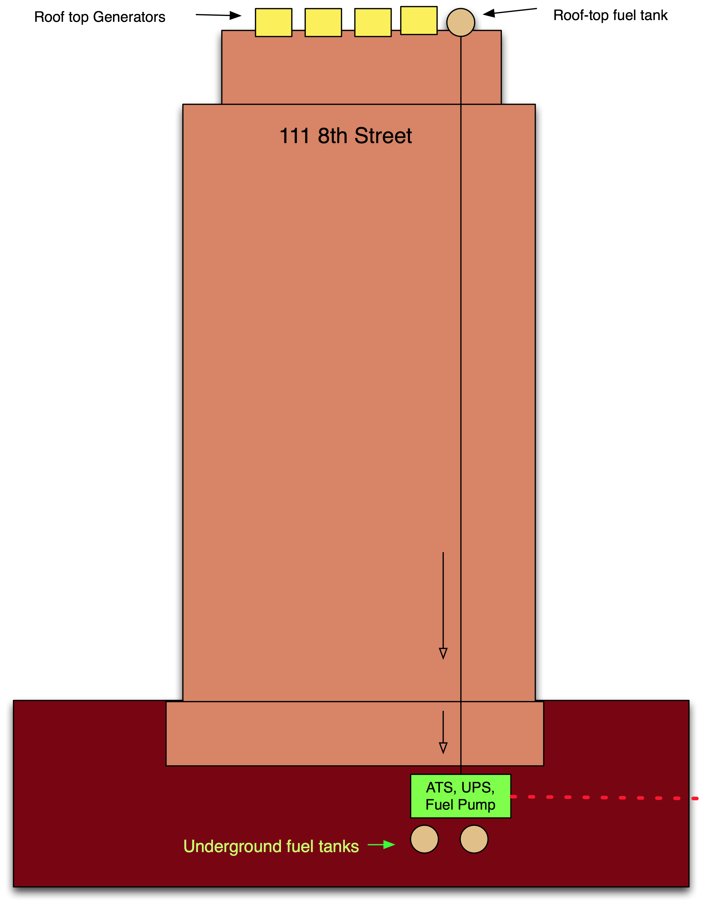

The Data Center Operations Model
This infrastructure requires data center operations staff.
Notes from the field.
Even Small Data Centers Require Effort
A foreign telco built into and established its own POP in Los Angeles. At the time of my visit, the telco country manager was also the POP facilities manager and was dealing with a weekend UPS failure. The manufacturer service technician was scrolling through the alarms to troubleshoot the failure, and the detailed description of the root cause was amazingly cryptic. The root cause came from only a single piece of equipment in only one of the rings. This experience highlighted some the specialized knowledge required at each ring of a professionally managed data center. Having a support team that can monitor and repair, and coordinate and maintain support will lead to a shorter outage that will not likely happen again – at least not in the same way.
Perhaps most importantly, when things break, and they will, how will the IDC handle the situation and how will it communicate with its customers?
Notes from the field.
The 111 8th Street Story
The 111 8th Street building outage illustrates the three rules of IXP outages:
- things break,
- everyone recognizes rule #1, and
- how the IDC keeps IDC participants informed is more important to the participants than the outage itself.
This 111 8th Street story focuses on the extraordinary chain of events that led to a 24-hour+ outage. I share this story with the hope that we learn from it the lesson that notification and continual updates matter a lot to this community. George Santayana, who, in his “Reason in Common Sense, The Life of Reason, Vol.1,” wrote, “Those who cannot remember the past are condemned to repeat it.” And, in fact, the Internet operations community has repeated the failure of notification on a continual basis. Here are the broad strokes of the 111 8th Street notification story shared with DrPeering anonymously...
The 111 8th Street Outage
During the New York City blackout in August 2003, the 111 8th Street building (housing many major telecommunications company facilities) lost power. As designed, the UPS took over the building load and the generators on the roof kicked on. A crude picture of the building is shown in Figure 12-12.

Figure 12-12. During the NYC blackout, the backup power systems failed during the extended 111 8th Street outage. The cascading failures were forgiven, but the notification failures were not.
On the roof of 111 8th Street are a handful of generators fueled by a relatively small (maybe 500 gallons) diesel tank, refilled by a powerful below-ground fuel pump attached to a couple of 50,000 gallon diesel tanks safely stowed under the building. The system was designed so that when the automatic transfer switch kicked the building from the utility power feed over to the building power system, the fuel pump would also kick on to continually top off the rooftop diesel tank. And here is where the first failure occurred.
When installed, the below-ground fuel pump was tested, and sure enough, it turned on and seemed to start pumping fuel. The problem was that the polarity was reversed on the pump, so instead of pushing fuel from the underground tanks to the roof tank, it was accidentally rigged to pull fuel from the roof down to the underground tanks! When the city power was cut, the underground fuel pump indeed powered on and made noise, but did exactly the opposite of what it was supposed to do. It started draining the 500 gallon rooftop fuel tank.
During the blackout, all seemed fine at the IXP (which we will call X from here on) until the first generator on the roof stopped running, and then the second, and then the third. The tenants of the building who didn’t have their own private power systems were told that there was a problem with the building power system. IXP Operator X notified its participants at this point that there was a power problem and the building owner was checking it out.
Another generator kicked off. Only two generators were now left operating on the roof.
IXP Operator X sent a note to its customers suggesting that the building was down to its last generators and that customers should shut down all unnecessary gear at the facility.
So far, so good.
However, it turned out to be the last communication most of the customers received from IXP X. The last of the generators kicked off shortly thereafter and most of the tenants of 111 8th Street were left completely without power.
The building electricians figured out that the roof tank was empty and the underground fuel pump was indeed running but pulling fuel down from the roof. They tried the polarity reversal test and the roof tank started filling up.
The roof tank filled up. But the generators were not starting up. Why?
During the hours that all of this activity was taking place, the generator starter motors were continually trying to restart the generators. The starter motors burned out! It took many hours to get the replacement starters delivered through the partying streets of New York City.
Once the new starters were installed, the generators cranked, but the generators still would not start. Why?
At the bottom of the 500-gallon roof tank was diesel sludge that had clogged the fuel pumps that fed the generators. It took more hours to get the tank cleaned and replacement fuel filters delivered through the partying streets of New York City.
Once the new fuel pumps were installed (and the sludge cleaned out of the fuel tank and fuel lines), the generators finally started up.
This process took many hours to unfold. And no notifications were sent to customers after IXP X lost power – radio silence lasted for over 24 hours of downtime.
During the outage, the building folks were probably scrambling to diagnose and fix the problem and perhaps not updating the tenants who depended on the building for power. Perhaps the building folks updated IXP Operator X periodically. We do not know. But what we do know is that IXP Operator X did not keep its customers updated during the outage, so the customers did not know if their equipment would be powering back up in a few minutes, hours, or days, and they could not prepare. ISPs told DrPeering that they can understand that failures occur, but the fact that there were no updates for an outage that ultimately lasted over 24 hours was maddening.
Lessons we should learn:
This scenario could have happened to any exchange point operator where power is out of its control. Indeed, unanticipated failure scenarios have happened to every data center company. What we should learn is that what seems to matter most to the participants is how the company responds to these events.
The part that was under IXP Operator X’s control was its communication strategy, and in this scenario it failed completely. The ISPs interviewed were very understanding about the outage itself, but were very upset about the notification failure.
The way the system failed also demonstrates cascading failures. It was the sequence of the power outage, followed by the fuel pump polarity issue that led to the starter motor failure and the fuel pump clogging issues. If the fuel pump hadn’t emptied the roof tank, the other two failures may not have occurred, at least not at that time. It was the cascading effect of these failures that made this outage an extended physical plant outage.
The N+1 electrical and mechanical system redundancy did not help.
Some would argue the root cause here was testing. Others would argue the root cause was lack of emergency preparedness by the IXP.